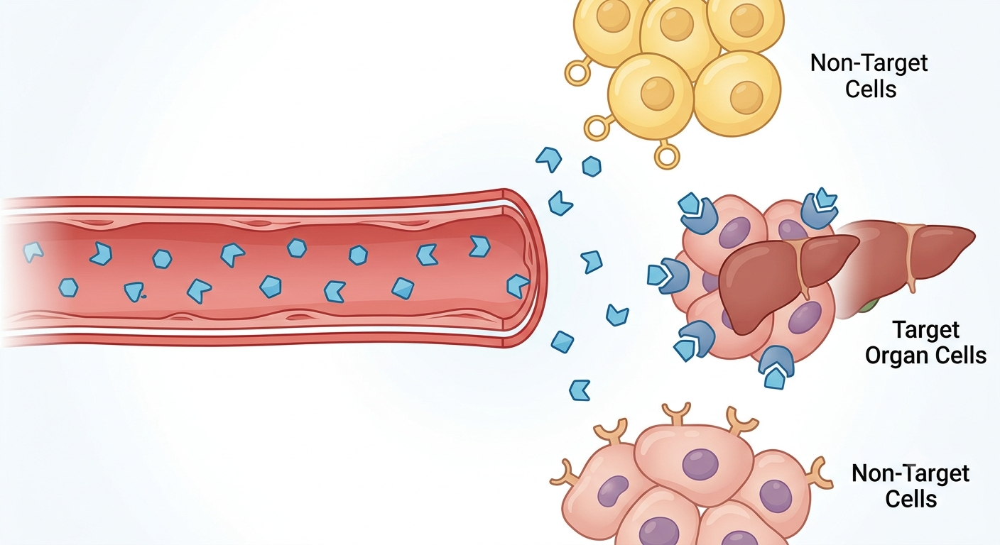
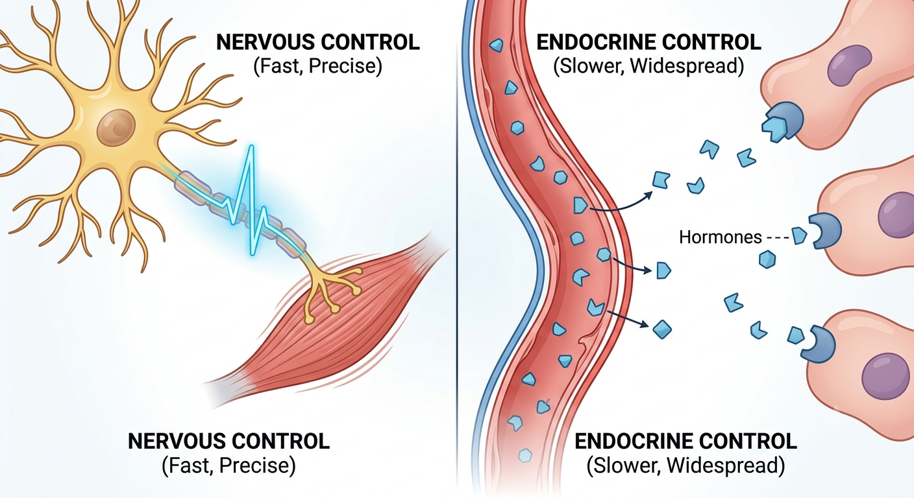
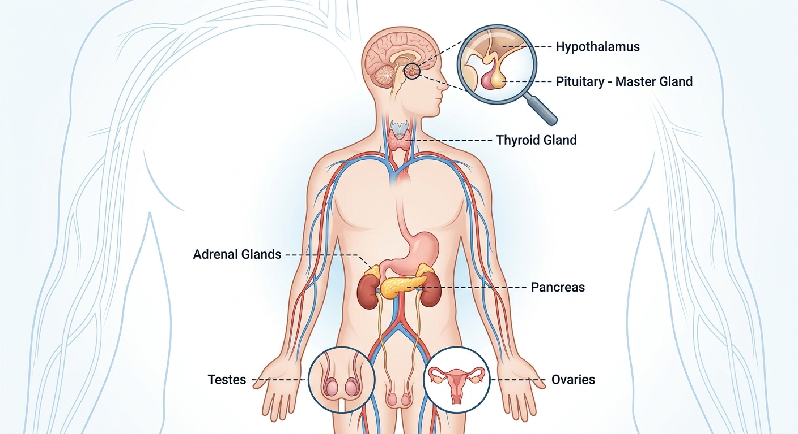
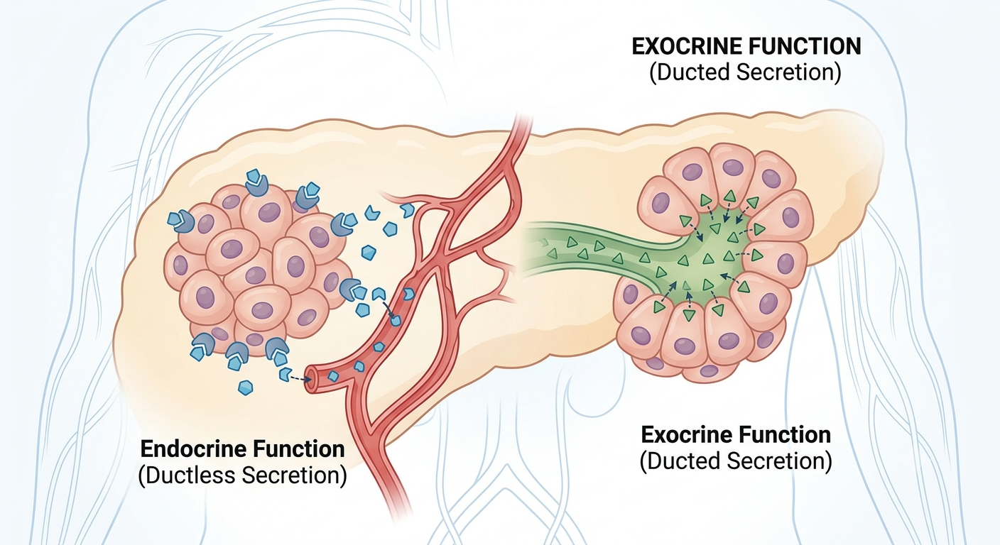

Hormones are the body's chemical messengers — slower and longer-lasting than nerve impulses. Click through the major glands to see what each one releases and why it matters.
The endocrine system is a network of glands that produce and secrete hormones — chemical messengers released directly into the bloodstream. Hormones travel throughout the body but only affect specific target organs or tissues, which have receptors that recognise that particular hormone.

The body has two communication systems working together: the fast, electrical nervous system, and the slower, chemical endocrine system. Each is suited to different jobs — nerves for split-second reactions, hormones for sustained, body-wide changes.
| Nervous system | Endocrine system | |
|---|---|---|
| Signal type | Electrical impulse | Chemical (hormone) |
| Transmitted via | Neurons (nerve cells) | Bloodstream |
| Speed of response | Very fast (milliseconds) | Slower (seconds to days) |
| Duration of effect | Short-lived | Long-lasting |
| Area affected | Precise, localised | Can be widespread |

Several glands throughout the body secrete hormones with specific roles:

Once secreted, a hormone diffuses into nearby capillaries and is carried around the body dissolved in the blood plasma. It only produces an effect in cells with the correct receptor for that hormone — the target cells. This is why a single hormone circulating everywhere in the blood can still have a very specific effect.
Not all glands work the way endocrine glands do. It's important to distinguish the two types:
| Endocrine glands | Exocrine glands | |
|---|---|---|
| Ducts | Ductless | Have ducts |
| How secretions travel | Hormones released directly into the bloodstream | Secretions released directly into a cavity, onto a surface, or to a specific target organ (not into the blood) |
| Examples | Thyroid, pituitary, adrenal glands, pancreas (hormone-producing part) | Sweat glands, salivary glands, pancreas (enzyme-producing part) |

Click a gland on the body diagram (or the list) to see its hormone and effect.
| Time after meal (hours) | 0 | 1 | 2 | 3 | 4 |
|---|---|---|---|---|---|
| Healthy person — glucose (mmol/L) | 5.0 | 7.8 | 6.5 | 5.2 | 5.0 |
| Untreated diabetic — glucose (mmol/L) | 5.5 | 9.5 | 10.8 | 10.2 | 9.0 |